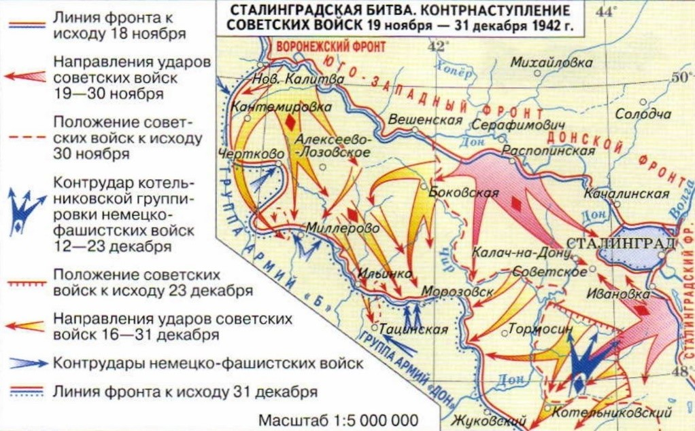

26-27 ноября 1942 года
Источник. История земли Волгоградской А.С. Скрипкин А.В., Луночкин, И.И. Курилла, с. 177.
Войска противника оказались в тяжелом положении. Еще вечером 23 ноября командующий 6-й германской армией генерал Паулюс направил в Берлин радиограмму с просьбой разрешить его войскам прорваться из окружения. Однако Гитлер продолжал настаивать на своем. 24 ноября он направил непосредственно Паулюсу радиограмму с приказом удерживать Сталинград до последнего.
События. Бои 26-27 ноября 1942 г.
В течение 26 ноября наши войска в районе Сталинграда, преодолевая сопротивление противника, продолжали наступление на прежних направлениях. На северо-западном участке фронта наши войска заняли населенные пункты Красное Село, Генералов. В районе излучины реки Дона войска заняли населенные пункты Калачкин, Перепольный, Верхний и Нижний Герасимов, Верхний Акатов, отбросив на этом участке остатки частей противника на восточный берег реки Дон. К юго-западу от Сталинграда наши войска заняли населенные пункты Ягодный. Скляров, Ляпичев, Нижне-Кумский, Громославка, Генераловский, Дарганов.
Карта

Источник. Волгоградская правда от 26 ноября 1982 г.
ОТ СОВЕТСКОГО ИНФОРМБЮРО
Южнее Сталинграда были успешно отражены контратаки двух пехотных дивизий противника, пытавшихся пробиться к на юго-запад. Противник понес большие потери. К исходу 26 ноября количество пленных увеличилось на 12000 человек. Всего за время боев с 19 по 26 ноября наши войска взяли в плен 63000 солдат и офицеров противника. За время боев с 19 по 26 ноября нашими войсками захвачено орудий всех калибров 1863, пулеметов 3851, винтовок около 50000, танков исправных и неисправных 1320, лошадей около 9000, а также 108 складов с военным имуществом, боеприпасами, продовольствием.
Хроника огненных дней. Бои в Сталинграде.
Если на просторах донских степей скорость нашего наступления измерялась большими расстояниями, то в Сталинграде счет шел на десяток метров.
Гитлеровцы, зарывшись в землю, в битый кирпич и щебень, огородившись проволокой и минами, вцепились в занятые ими кварталы, заводы, рабочие поселки.
Неприятель не предпринимал активных действий. Изредка фашисты затевали перестрелки да пускали по ночам ракеты, боясь внезапного нападения. Но утратив какой-нибудь рубеж или опорный пункт, они с яростью бросались в контратаки. Войны 62-й Армии, продолжая наступать, выбивали противника их насиженных мест. Перешел в наступление и гарнизон Дома Павлова, выдержавший двухмесячную осаду.
С падение двух вражеских узлов сопротивления на улице Пензенской (пролегавшей ныне в районе Советской улицы от Центрального рынка и к северу) наши войска получили возможность сообщаться с левым берегом Волги не только ночью, но и днем: у врага были отняты лучшие пункты наблюдения. Дивизия Николая Филипповича Батюка действовала в районе Мамаева кургана, стремясь к ее вершине. Противник сильно укрепился здесь, взятие высоты представляло очень трудную задачу. Из-за Волги в поселок Рынок переправился Тракторозаводской райком партии.
ОТ СОВЕТСКОГО ИНФОРМБЮРО
Утреннее сообщение 27 ноября.
В течение ночи 27 ноября наши войска в районе города Сталинграда, преодолевая сопротивление противника, продолжали наступление на прежних направлениях.
В северной части города Сталинграда наши бойцы ударили с флангов, отбросили противника и заняли четыре больших квартала города. Немцы потеряли свыше 250 солдат и офицеров. В районе заводов наши части продвинулись вперед. В течение ночи было истреблено свыше 700 солдат и офицеров противника.
Север-западнее Сталинграда советские войска, преодолевая противника, продвигались вперед. На одном участке части, которыми командуют товарищи Шехтман и Меркулов, истребили свыше 1000 вражеских солдат, взяли много пленных.
Вечернее сообщение 27 ноября.
В течение 27 ноября под Сталинградом наши войска продолжали наступление и заняли населенные пункты Мариновка, Новоаксайский, Заря.
В северной части города Сталинграда бойцы под командование Горохова вели активные боевые действия и продвинулись вперед на 400-500 метров. В заводском районе наши части заняли несколько зданий и нанесли немцам большой урон.
Юго-западнее Сталинграда на одном участке отбили атаки противника, пытавшегося прорваться на юго-запад, а на остальных участках успешно продвигались вперед. Одно из соединений заняло несколько населенных пунктов. Захвачено в плен несколько сот вражеских солдат и офицеров.
Лживые сообщения немецкого командования о боях в районе Сталинграда.
Когда линия немецкой обороны была прорвана советскими войсками, немецкое командование скрывало этот факт от своих солдат и населения Германии. Когда же дальше скрывать это стало невозможно, они начали всякого рода небылицы. Например, в одном из сообщений немцы заявили, что они за два дня разбили 10 советских танковых бригад и стрелковых дивизий. При этом немцы назвали следующие номера 463, 333, 321, 302 стрелковые дивизии, 121 танковую дивизию, 155, 163 и 235 танковые бригады. 5 и 6 кавалерийские дивизии. Это заявление немецкого командования являлось ложью, ибо одних дивизий нет или вообще не было в составе наступающей наших войск в районе Сталинграда. Те же дивизии и бригады, которые в составе наступательных войск, вовсе не разбиты, а продолжали успешно наступать. Вот такой жульнический трюк использовало немецкое командование.
Другой трюк заключался в том, что они вдруг в десятках радиопередач говорили о «новом чрезвычайно эффективном оружии немецкой армии. Это якобы новый танк-огнемет, перебрасывающий пламя через пятиэтажные дома, и электрический пулемет, выпускающий 3000 пуль в минуту. На самом деле никакого нового танка-огнемета у немцев не было, а были танки-огнеметы, которые они применяли еще в первые дни войны. Не было у немцев также и подобного электрического пулемета. Разумеется, гитлеровцы делали это с той целью, чтобы путем лжи удержать немецкие войска, попавшие в тяжелейшее положение, от окончательного разложения и любым способом заставить сражаться.
В стане врага.
В приказе Гитлера командующему 6-й армией Ф. Паулюсу говорилось: «Войска 6-й армии временно окружены русскими. Я намерен сосредоточить армию в районе Сталинград (северная окраина), Котлубань высота 137, высота 135 Мариновка, Цыбенко, Сталинград (южная окраина). Личный состав армии может быть уверен, что я предприму все для того, чтобы обеспечить нормальное снабжение армии и своевременно освободить ее от окружения. Я знаю храбрый личный состав 6-й армии и ее командующего и уверен, что вы все выполните свой долг».
Итак, решение было принято, жребий брошен: Гитлер приказал 6-й армии занять круговую оборону и ожидать помощи из вне. Ф. Паулюс и командование группой армий «Б» считали, что надо прорываться на юго-запад. Такой прорыв намечался на 25 ноября. Но в последний момент Гитлер отменил его. В его приказе говорилось: «Войска 6-й армии, окруженные в Сталинграде, впредь будут именоваться войсками крепости Сталинграда». Цейтцлеру, настаивавшему на отходе, Гитлер разъяснил: 6-я армия останется там, где находится сейчас! Это гарнизон крепости, а обязанность крепостных войск - выдержать осаду. Если нужно они будут находиться там всю зиму, и я деблокирую их во время весеннего наступления.»